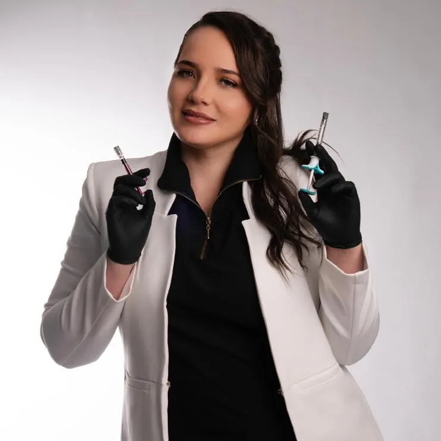
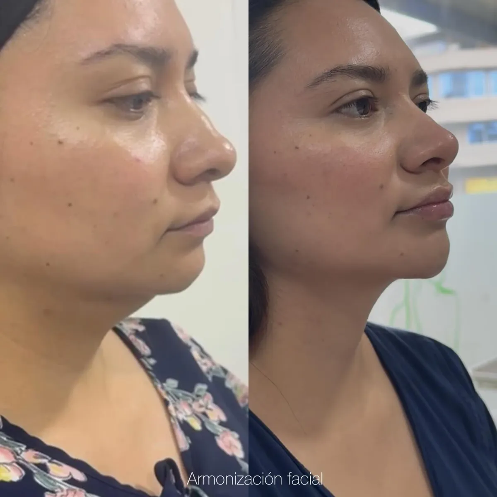
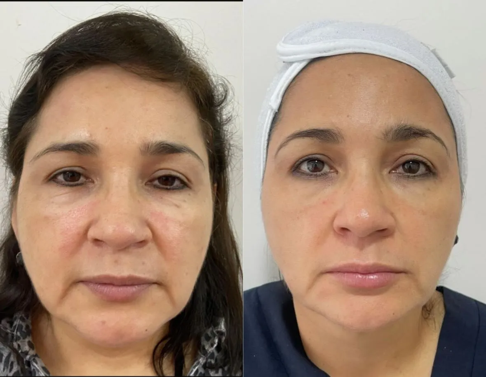
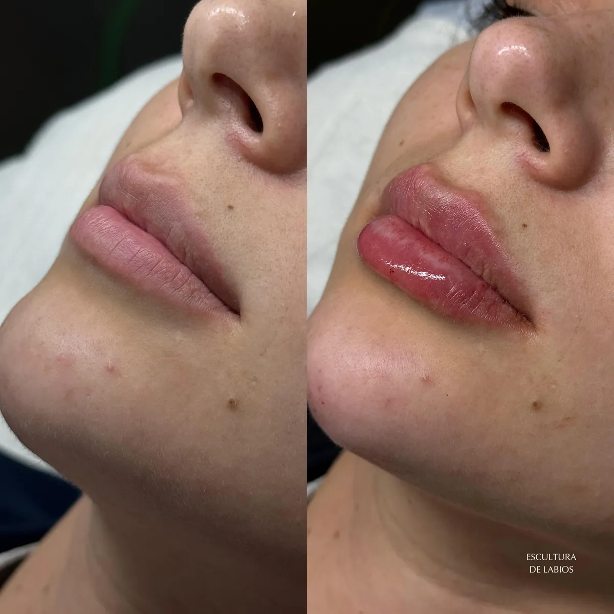
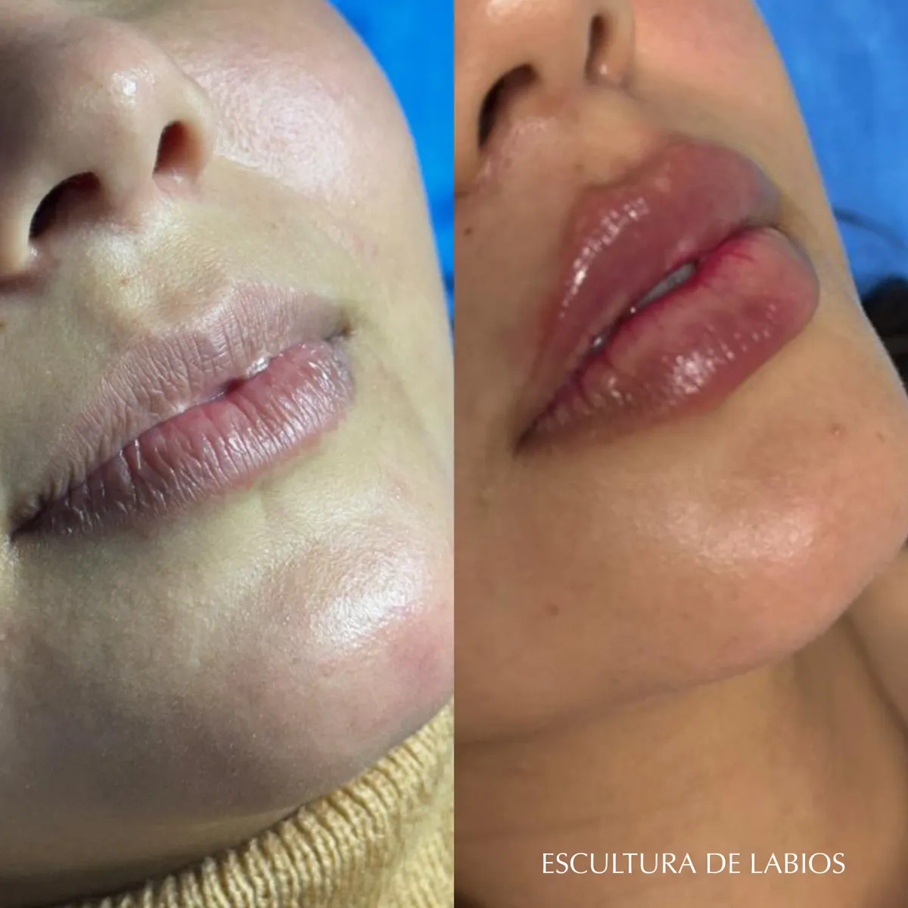
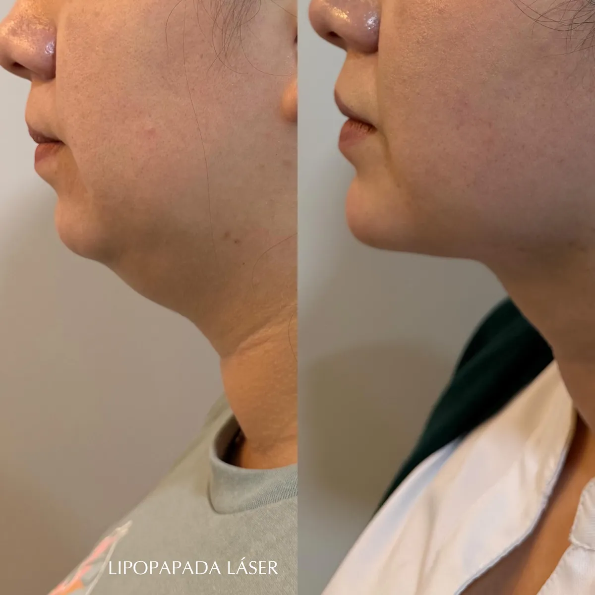
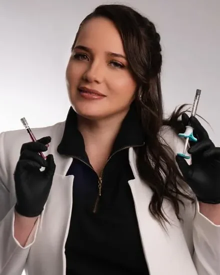

Dra. Tatiana Ortiz
Armonización facial que se nota, sin que se note.
Médica experta en rejuvenecimiento facial·Equipo Belité·Quito y Santo Domingo
Lo que hago, con medida.
Cada tratamiento empieza por una valoración. Ahí vemos qué tiene sentido para tu rostro y qué no hace falta tocar.
Armonización facial
Analizo las proporciones de tu rostro para decidir dónde conviene aportar estructura y dónde es mejor no intervenir. El objetivo es equilibrio, no cambiar quién eres.
Consultar por WhatsAppBotox
Suaviza las líneas de expresión de frente, entrecejo y contorno de ojos, cuidando que tu rostro conserve su movimiento y sus gestos.
Consultar por WhatsAppRinomodelaciónSin cirugía
Mejora el perfil de la nariz con ácido hialurónico, cuando la forma de tu nariz y la valoración médica lo permiten.
Consultar por WhatsAppLabios
Hidratación, definición o volumen en la medida justa, respetando la forma de tus labios y su relación con el resto del rostro.
Consultar por WhatsAppPapadaLipopapada láser
Un procedimiento con láser para trabajar la grasa localizada bajo el mentón y definir el contorno. En la valoración revisamos si es una buena opción para ti.
Consultar por WhatsApp
También realizo lipoescultura.Si te interesa, lo conversamos en la valoración.Preguntar
Resultados de verdad.
Fotos de pacientes, antes y después. Cambios que se notan en el conjunto del rostro, no en un rasgo exagerado.

AntesDespués
AntesDespuésEstoy preparando estos casos.

AntesDespués
AntesDespuésEstoy preparando estos casos.
 AntesDespués
AntesDespués AntesDespués
AntesDespuésEstoy sumando casos de rinomodelación a esta galería. Si quieres ver más ejemplos, pídemelos por WhatsApp o en tu valoración.
Pedir ejemplos
AntesDespués AntesDespués
AntesDespuésEstoy preparando estos casos.
 AntesDespués
AntesDespués AntesDespués
AntesDespuésEstoy sumando casos de botox a esta galería. Si quieres ver más ejemplos, pídemelos por WhatsApp o en tu valoración.
Pedir ejemplosResultados reales de pacientes. Pueden variar según cada caso.

Hola, soy Tatiana.
Soy médica experta en armonización facial, botox y rinomodelación, apasionada por resaltar tu belleza de manera natural.
Formo parte del equipo de Belité Medicina Estética Avanzada, donde atiendo en Quito y Santo Domingo. Mi trabajo empieza mucho antes de la aguja: entender qué te gustaría cambiar, qué no, y explicarte con honestidad qué se puede lograr.
[CREDENCIALES PENDIENTES] Universidad, especialización, certificaciones y años de experiencia.
— Dra. Tatiana Ortiz
Cómo trabajo.
Primero te valoro, después decidimos
La primera cita es para escucharte y analizar tu rostro, no para venderte un paquete. Si un tratamiento no te conviene, te lo digo.
Natural no significa poco
Busco que te veas descansada y fresca, como tú en tu mejor día. Prefiero avanzar con medida y ajustar en el control antes que pasarme.
Te acompaño después
Hacemos un control tras el tratamiento y sigo disponible por WhatsApp para resolver tus dudas durante los días siguientes.
Atiendo en Belité.
Cada sede tiene su propio WhatsApp para agendar. Elige la que te quede más cerca y escríbenos.
Belité Quito
- Dirección
- Grecia y La Granja
Edificio Wynne - WhatsApp y citas
- +593 98 263 3723
Belité Santo Domingo
- Dirección
- Avenida Quito y N130
Santo Domingo de los Tsáchilas - WhatsApp y citas
- +593 98 497 3097
Preguntas frecuentes.
Respuestas generales. En la valoración te explico cómo aplica cada una a tu caso.
¿Duele?
La mayoría de los tratamientos se hacen con anestesia tópica o con productos que ya incluyen anestésico, así que lo habitual es sentir una molestia leve. Antes de empezar te explico cómo será en tu caso.
[VALIDAR CON LA DRA.]¿Cuánto dura el resultado?
Depende del tratamiento, del producto y de cómo responde tu cuerpo. El botox y el ácido hialurónico son temporales, por eso en la valoración te doy un rango realista para tu caso y te digo cuándo conviene un retoque.
[VALIDAR CON LA DRA.]¿Cuándo se ve el resultado?
Algunos cambios se notan desde el primer día y otros se asientan con el paso de los días, como ocurre con el botox. Por eso agendamos un control para revisar el resultado contigo.
[VALIDAR CON LA DRA.]¿Necesito tiempo de recuperación?
Con los tratamientos inyectables normalmente puedes retomar tus actividades el mismo día. Puede haber algo de inflamación o un pequeño morado los primeros días. La lipopapada láser requiere más cuidados, que te explico en detalle antes del procedimiento.
[VALIDAR CON LA DRA.]¿Se pueden combinar tratamientos?
En muchos casos sí, y combinarlos puede dar un resultado más armónico. Lo importante es hacerlo con un plan y en el orden adecuado, que definimos juntos en la valoración.
[VALIDAR CON LA DRA.]